April 8-9, 2020
Welcome back
“The simple graph has brought more information to the data analyst’s mind than any other device.” – John Tukey
Visualize Data with
A basic plot using ggplot in R
We ended the last class with:
ggplot(heart, aes(x = sex, y = chol)) +
geom_point(color = "darkblue", size = 3) +
labs(x = "sex",
y = "Cholesterol",
title = "Cholesterol values from the heart disease dataset",
caption = "Data from Kaggle | Plot from @matthewhirschey") +
theme_minimal() +
NULL
which built this…
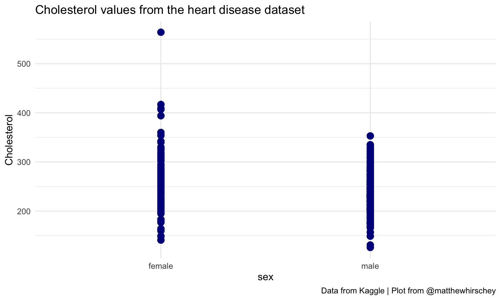
Basic ggplot2
Any questions from last week?
Basics of a ggplot code
Below is an example of the most basic form of the ggplot code
ggplot(data = dataframe) +geom(mapping = aes(x, y))
Take a moment to look back at the code template. You can see that in that code we assigned a dataset and the information we needed to map it to a type of plot
Basics of a ggplot code
ggplot(data = heart) +geom_point(mapping=aes(x = age, y = thalach))
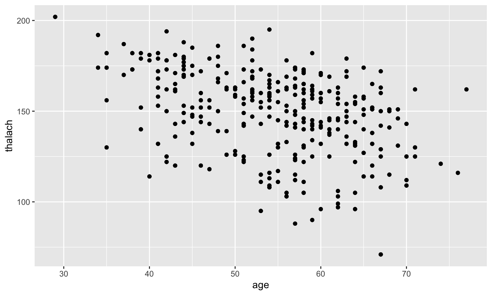
Build a ggplot
- “Initialize” a plot with
ggplot()
ggplot(data = heart) +
- Add layers with
geom_functions
geom_point(mapping=aes(x = age, y = thalach))
Notes on ggplot style
Generally, different people have strong opinions about style and data visualization
Data visualization is a rich and complex area of study and is beyond the scope of this introductory course
That being said, here are a few style tips:
- While you can put the + at the beginning of the next line, it is generally put at the end of the previous line
- Arguments do not need to be explicit: this chunk of code is equivalent to the previous chunk (w/ data, mappings)
ggplot(heart) +geom_point(aes(x = thalach, y = thalach))
How are these two plots similar?
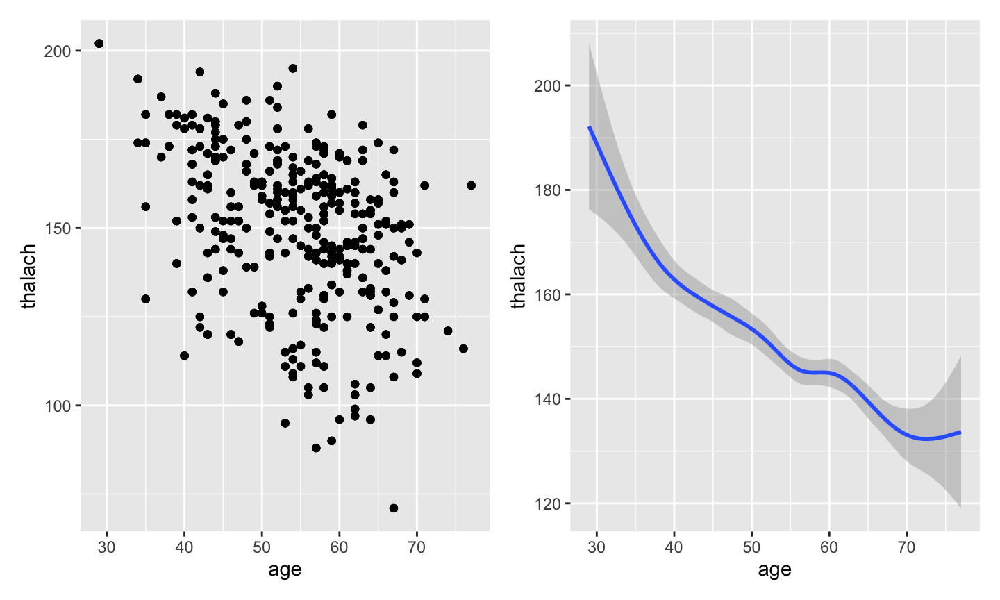
The geom is different between these plots
geom is short for geometric object, which is the visual object used to represent the data
plot1 <- ggplot(heart) +geom_point(aes(age, thalach))
plot2 <- ggplot(age, thalach) +geom_smooth(aes(age, thalach))
Choosing your (geom)itries
Different data types require different plot types.
When plotting your data, it is often helpful to take a glimpse at the data you intend to plot to know what kinds of variables you will be working with
glimpse(heart)
Geoms
So now that you know your variable types, how do you know what geoms to use??
Use the following resources to match your data type to the appropriate geoms
Change this scatterplot code to draw boxplots
ggplot(heart) + geom_point(aes(x=sex,y=age))Use the cheatsheet. Try your best guess.
What will this code do?
ggplot(heart) +geom_boxplot(aes(x=sex,y=age)) +geom_point(aes(x=sex,y=age))
Try including two geoms for yourself
Each new geom adds a new layer
Aesthetics
Everything up to this point gets you a basic graph; but what about colors, shapes and overall style?
You can change 5 basic aesthetics
1. Color- changes the outline color of your datapoints
2. Size - choose the size of the datapoint
3. Shape - choose a pre-defined shape
4. Alpha- changes the transparency of each point
5. Fill- changes the fill color of your points
Go to code/
Open 04_ggplot2.Rmd
Complete the exercise.
Mapping these aesthetics to data
Beyond simply changing the size or color of the variables in your plot, you can encode more information by mapping these values to data in your data set.
Go to code/
Open 05_aes.Rmd
Complete the exercise.
Global vs Local
In ggplot2, we have the options to set mappings globally or locally. Setting a mapping globally means to set those values in the original ggplot function.
Example: Earlier in class you made this graph:
ggplot(heart) +geom_jitter(aes(x=sex, y=age))+geom_boxplot(aes(x=sex, y=age))
Global vs Local
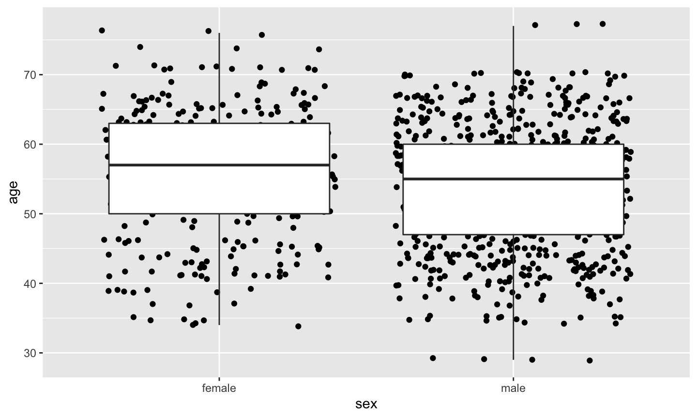
Global vs Local
However, if we map our x and y values in the ggplot function we find that we generate the same graph
ggplot(heart, aes(x=sex, y=age) +geom_jitter() +geom_boxplot()
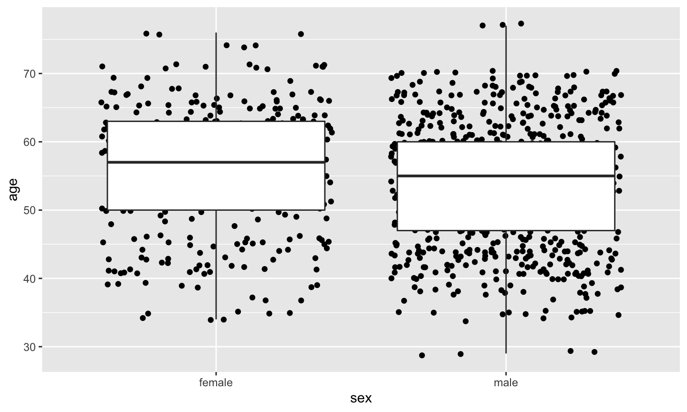
Global vs Local
This is because when you set the aes mappings in the original ggplot function you are setting the aes globally.
This means all the functions afterwards will inherit that mapping. So in our example, this means that both the jitter and boxplot geoms know to graph the same information
You can also set aes values locally within the geom function. Doing so will only change the values in that geom
Global vs Local
ggplot(heart, aes(x=sex, y=age) +geom_jitter() +geom_boxplot(aes(color = sex))
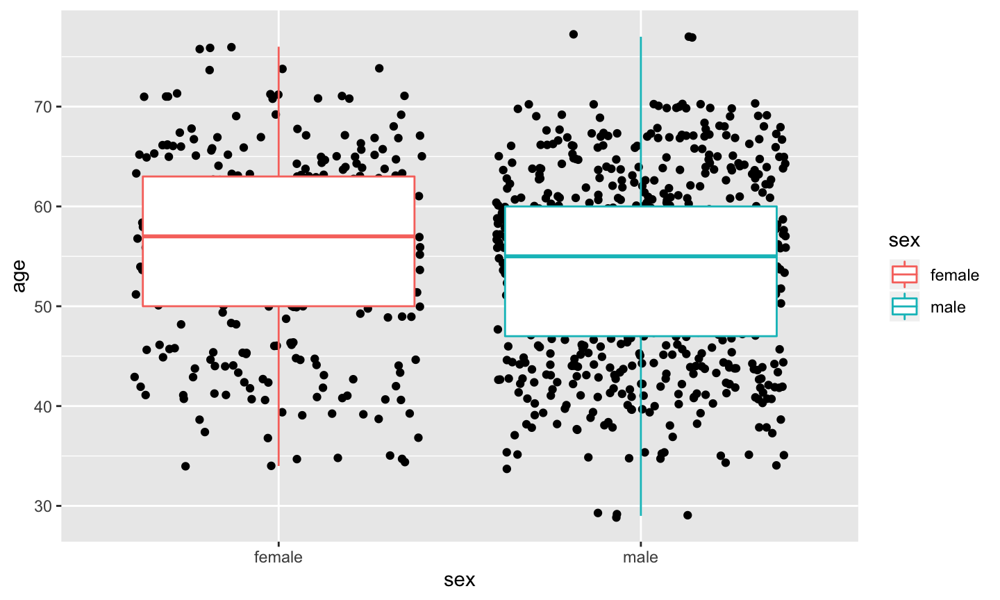
Global vs Local
Data can also be set locally or globally. For this example, let’s filter our original data first using the dplyr::filter function
df_filter <- heart %>% filter(thalach > 195)
*this number is two standard deviations above the mean value of thalach
Global vs Local
Now, let’s identify only the patients in our data that are outliers, more than 2SD above the mean, by setting data locally in a new geom
ggplot(heart, aes(x=sex, y=age) +geom_jitter() +geom_boxplot(aes(color = sex)) +geom_label(data=df_filter, aes(label=patient_id))
Global vs Local
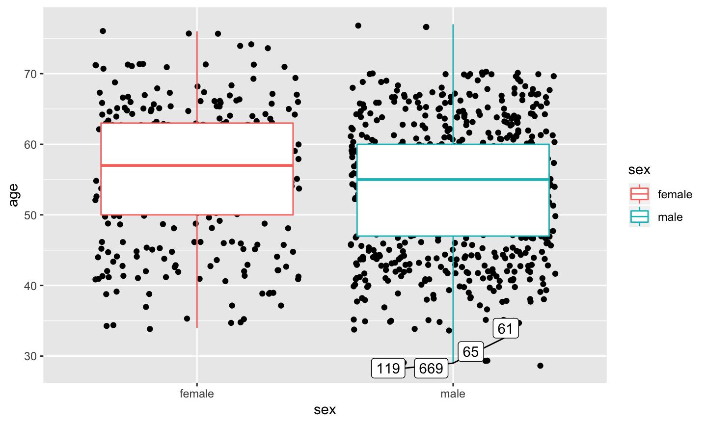
Global vs Local
You notice we have to indicate the new dataset, but because it has the same x and y values, we did not need to set those mappings
Go to code/
Open 06_global_v_local.Rmd
Complete the exercise to practice mapping locally and globally.
Labels and Legends
Several options exist to change the default labels and legends. Recall, this code:
ggplot(heart, aes(x=sex, y=age) +geom_jitter() +geom_boxplot(aes(color = sex))
Labels and Legends
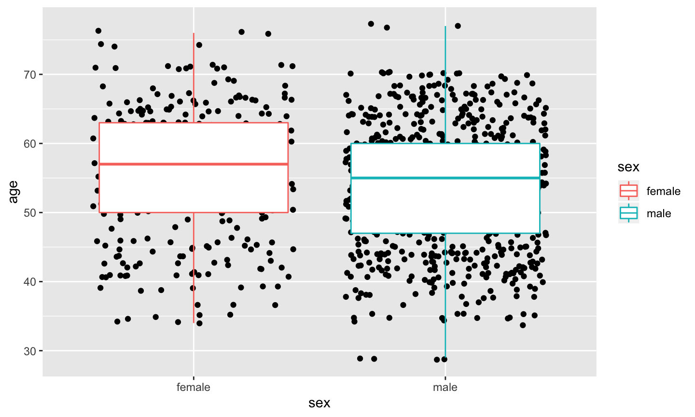
But it has two problems:
1. The x-axis label is redundant
2. The figure legend is also redundant
Change labels using labs
ggplot(heart, aes(x=sex, y=age) +geom_jitter() +geom_boxplot(aes(color = sex)) +labs(x ="") #blank quotes removes the label
Change labels using labs
Gave us this plot:
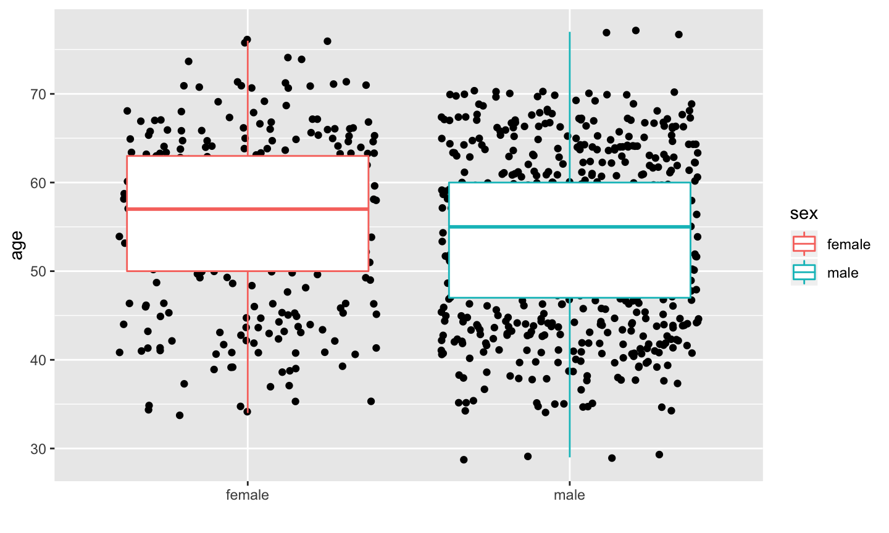
Change legend using guides
ggplot(heart, aes(x=sex, y=age) +geom_jitter() +geom_boxplot(aes(color = sex)) +labs(x ="") #blank quotes removes the label +guides(color = "none")
Change legend using guides
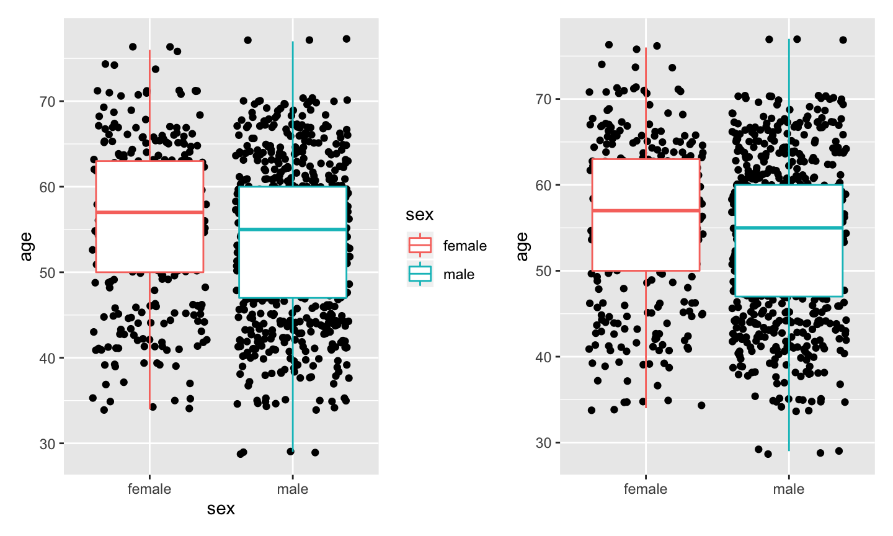
Faceting
Faceting allows you to create multiple graphs side by side in one panel. Especially useful when you want to see the data together, but not on top of each other
For example:
ggplot(heart) +geom_point(aes(x=sex, y=age)) +facet_grid(cols = vars(fbs))
Faceting
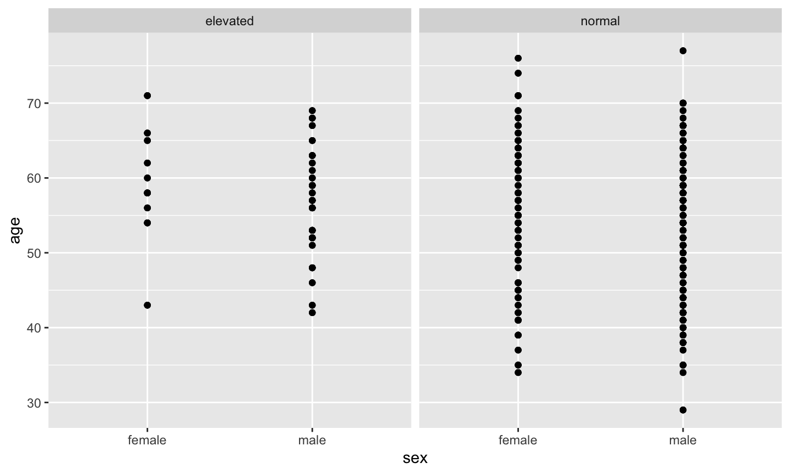
*This is especially useful for exploratory data analysis
Themes
You can change almost everything you see on your chart, but a lot of the things you may look to change are part of the “theme”
Here we are going to change some features about our title text:
ggplot(heart, aes(x=sex, y=age) +geom_jitter() +geom_boxplot(aes(color = sex)) +labs(title = "My first plot") +theme(plot.title = element_text(face = "bold", size = 12))
Themes
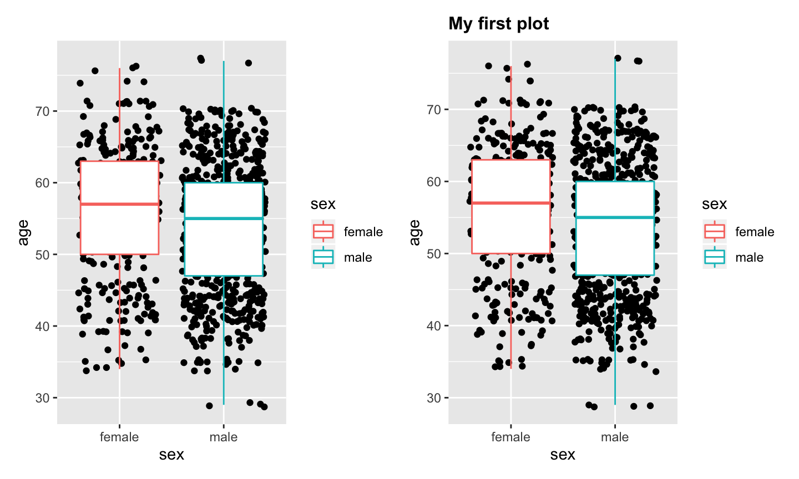
Themes
Next, let’s change the aesthetics of our legend box
ggplot(heart, aes(x=sex, y=age) +geom_jitter() +geom_boxplot(aes(color = sex)) +labs(title = "My first plot") +theme(plot.title = element_text(face = "bold", size = 12),legend.background = element_rect(fill="gray", colour="black"))
Themes
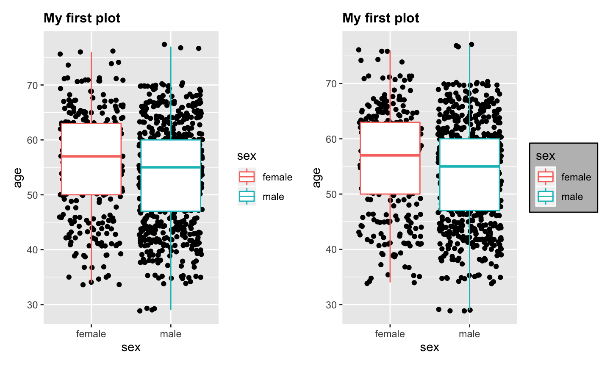
Themes
Finally, let’s change the legend position
ggplot(heart, aes(x=sex, y=age) +geom_jitter() +geom_boxplot(aes(color = sex)) +labs(title = "My first plot") +theme(plot.title = element_text(face = "bold", size = 12),legend.background = element_rect(fill="gray", colour="black"),legend.position = "bottom"))
Themes
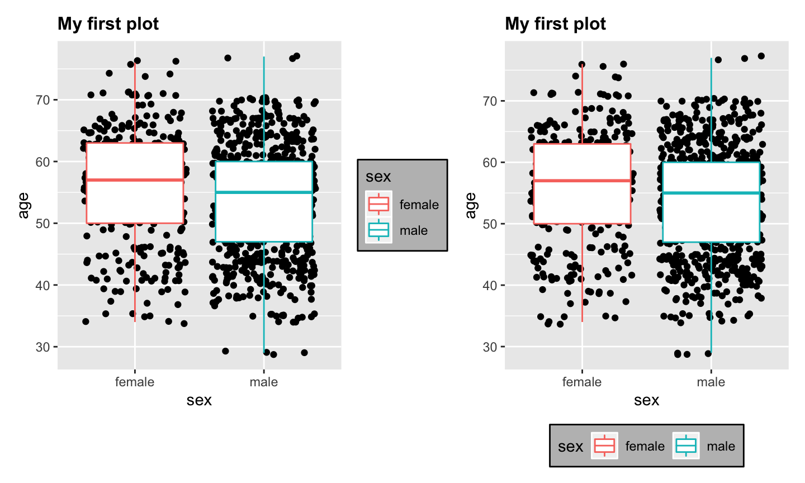
Themes
Pre-set themes also exist as an easy way to change the entire theme of your graph quickly. They can also be combined with custom theme settings
ggplot(heart, aes(x=sex, y=age) +geom_jitter() +geom_boxplot(aes(color = sex)) +labs(title = "My first plot") +theme_minimal()
Themes
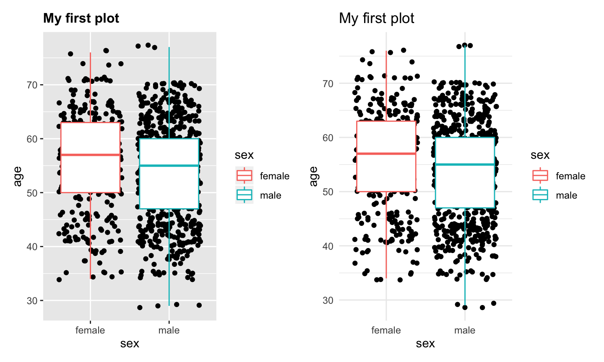
Saving plots using ggsave
If you make a plot there are a few ways to save it, though the simplest is to use ggsave
ggsave("ggsaveexample.png", plot = last_plot())
You can change the type of file you save or the size.
ggsave("ggsaveexample.pdf", plot = my_awesome_object, width = 6, height = 6, units = "cm")
Saving plots using ggsave
Where does it save??
getwd()
Putting it all together
Go to code/
Open 07_ggplot_together.Rmd
Complete the exercise to put all these ggplot skills to work.
R
Importing
Any questions?
Importing data into R
The readr package (found in the tidyverse collection) contains a number of useful functions of the form read_* to import data. For example, if you have a .csv file, you would use the read_csv function
The dataset provided to you is a cleaned R-specific document. But you will never find this in ‘the wild’.
Most often, you will need to find a data file (such as csv), and import it
Importing data into R
For the purpose of this class, we have generated a simulated dataset of pseudo-patient histories to accompany the heart dataset.
To import the phx.csv file into RStudio, run the following:
patient_hx <- read_csv(here::here("data", "phx.csv"))
Go to code/
Open 08_import_and_join.Rmd
Complete the exercise to import this new dataset.
Importing data into R
You can also use the readr package to import data from a URL
For example, to load a dataset from a URL, run the following
path <- here::here("data", "phx.csv")
url <- "https://raw.githubusercontent.com/matthewhirschey/tidybiology-plusds/master/data/phx.csv"
patient_hx <- read_csv(url)
Combining datasets
There are many times when you have two or more overlapping datasets that you would like to combine
The dplyr package has a number of *_join functions for this purpose

left_join
Returns all rows from a, and all columns from a and b
Rows in a with no match in b will have NA values in the new columns
If there are multiple matches between a and b, all combinations of the matches are returned
left_join example
Take a look at the variables in each dataset - heart and patient_hx
You will notice that both datasets contain common variable - patient_id. This can therefore serve as a common variable to join on. Let’s join on this:
left_join heart with patient_hx and assign the output to a new object called heart_join_left
Go to code/
Open 08_import_and_join.Rmd
Complete the exercise to join the two datasets.
Now you have one dataset with additional useful information
right_join
right_join
Returns all rows from b, and all columns from a and b
Rows in b with no match in a will have NA values in the new columns
If there are multiple matches between a and b, all combinations of the matches are returned
This is conceptually equivalent to a left_join, but can be useful when stringing together multiple steps using %>%
inner_join
inner_join
Returns all rows from a where there are matching values in b, and all columns from a and b
If there are multiple matches between a and b, all combination of the matches are returned
full_join
full_join
Returns all rows and all columns from both a and b
Where there are no matching values, returns NA for the one missing
R
Strings
Any questions?
Strings hold text
A string is what we store text within. It can be either:
- A single word: "awesome"
- A sentence: "this class is awesome"
- A combination: c("blue", "is my favorite", "color")
Any of these can be stored as object, which we call strings.
Dealing with strings
Dealing with character strings is a bit different than dealing with numbers in R?
- Sort?
- Select?
- Change?
Fortunately, the tidyverse as a package called stringr for dealing with them.
Stringr
Counting string
str_count() is a function we can use to count the number of rows that match a particular pattern.
The output with either be 1 (match), or 0 (no match)
In this code:
- string we want to evaluate is heart_joined$health_status
- pattern we want to count "High Cholesterol"
str_count(heart_joined$health_status, "High Cholesterol")
Counting
str_count(heart_joined$health_status, "High Cholesterol")
## [1] 0 0 0 0 1 1 1 1 1 1 0 1 0 1 0 0 1 1 1 0 0 0 0 1 0 1 0 1 1 1 0 1 0 1 0 0 0 ## [38] 1 1 0 1 1 1 1 1 0 0 0 1 0 1 1 0 0 0 0 0 1 0 0 0 1 1 0 0 1 0 1 0 0 1 0 1 0 ## [75] 1 1 1 0 0 0 0 0 0 0 0 0 0 1 1 0 1 0 0 0 0 0 1 1 1 0 0 0 1 1 0 1 1 1 0 0 0 ## [112] 0 1 1 0 1 1 0 0 1 1 0 1 1 1 0 1 0 0 0 0 1 0 0 1 0 1 1 1 0 1 0 0 0 0 0 1 0 ## [149] 1 1 1 1 1 1 1 1 0 1 1 0 1 0 1 1 1 1 0 1 1 0 1 1 0 0 0 1 1 1 0 1 0 0 1 0 1 ## [186] 1 0 1 1 1 1 0 1 0 1 0 0 1 1 0 0 0 1 0 1 1 0 1 0 1 0 1 1 1 1 1 1 0 1 1 0 1 ## [223] 0 0 1 0 0 1 0 0 1 0 1 1 1 0 0 1 0 1 1 0 0 0 1 0 1 1 0 0 1 0 1 1 0 1 0 1 0 ## [260] 1 0 0 0 1 0 0 1 0 0 1 0 1 0 0 0 1 0 0 1 0 0 0 0 0 0 1 1 1 1 0 0 1 1 0 1 1 ## [297] 0 1 0 1 0 0 1 1 0 1 1 0 0 1 1 1 1 1 0 1 1 1 0 0 1 1 1 1 1 1 1 1 1 0 0 1 1 ## [334] 0 0 1 0 1 1 1 0 0 1 0 0 1 1 1 1 1 1 0 1 0 1 1 0 1 0 0 0 0 0 1 0 1 0 0 0 0 ## [371] 1 1 0 1 0 0 0 1 0 0 0 0 0 1 1 0 0 1 1 0 1 1 0 0 1 1 1 0 0 0 0 0 1 0 0 1 0 ## [408] 0 1 0 0 1 1 1 1 0 1 0 0 1 1 1 1 1 1 1 0 0 1 1 0 0 1 1 1 1 1 0 1 1 1 1 1 0 ## [445] 1 0 1 1 1 0 1 1 0 1 0 0 1 0 1 1 1 1 0 0 1 0 0 1 1 1 0 1 0 0 0 0 1 0 1 0 1 ## [482] 1 1 0 1 1 0 1 1 1 1 0 1 1 1 0 1 0 0 0 0 0 0 0 1 1 1 0 1 1 1 0 1 0 0 0 0 0 ## [519] 0 0 0 0 1 0 0 1 0 0 1 0 1 1 0 0 1 0 0 1 1 0 1 0 1 0 1 0 1 0 1 1 1 1 1 0 0 ## [556] 1 0 0 0 0 0 1 0 1 0 0 1 0 0 0 1 1 0 1 1 1 1 1 1 0 0 0 1 0 1 0 1 0 1 1 1 1 ## [593] 1 1 0 0 0 0 1 0 1 1 1 0 1 1 0 1 0 1 1 0 0 0 1 0 1 1 1 1 1 1 1 0 1 1 0 0 0 ## [630] 1 1 1 0 0 0 1 1 1 1 0 1 1 1 0 0 1 1 1 0 0 1 0 0 1 1 0 0 0 1 1 0 1 0 1 0 1 ## [667] 0 1 0 1 1 0 1 1 1 0 1 1 1 1 1 1 0 0 0 1 0 1 1 1 0 1 0 0 0 1 0 0 0 1 0 0 1 ## [704] 0 0 0 0 1 0 1 0 0 0 0 0 1 0 1 1 0 1 1 1 0 1 1 1 0 1 1 0 0 0 0 0 0 0 0 1 1 ## [741] 0 1 1 0 1 0 1 0 0 0 1 1 1 0 1 1 1 0 0 1 1 1 0 1 0 1 1 0 0 1 0 0 1 0 1 0 1 ## [778] 1 0 0 0 0 1 0 0 1 1 1 1 1 0 0 0 0 0 0 0 0 1 1 0 0 0 0 0 0 1 0 0 0 0 1 1 0 ## [815] 0 0 1 1 1 0 0 1 1 0 0 1 0 0 0 1 0 0 1 0 1 0 0 0 0 1 0 0 0 1 1 0 0 0 1 1 1 ## [852] 1 1 0 1 0 0 1 0 1 0 1 1 0 1 0 1 0 0 0 1 1 0 0 1 0 0 0 0 1 0 0 0 1 0 1 1 0 ## [889] 1 1 0 1 0 0 1 1 1 0 1 0 0 1 1 0 1 1 0 1 1 0 0 1 0 0 0 1 1 1 0 0 0 0 1 0 1 ## [926] 0 0 0 1 0 1 0 1 0 0 0 1 1 0 1 1 0 0 0 0 0 1 0 0 0 1 1 1 0 1 0 1 0 1 0 0 1 ## [963] 0 1 0 0 1 0 0 1 0 0 0 1 0 0 1 0 0 1 0 0 0 1 0 0 1 0 1 1 0 0 1 1 0 1 1 0 1 ## [1000] 1 0 0 0 0 1 0 0 0 1 0 1 1 0 1 0 0 1 1 0 0 0 1 1 1 0
Summarizing our counts
A bunch of 0 and 1 are not incredibly useful.
But since R is good at adding, we can simply wrap the previous expression in sum()
Matching subsets of strings
We previously matched the entire string “High Cholesterol”
But we can use the same function to detect patterns within longer strings.
Let’s look for how many patients take a statin of any kind using str_count(heart_joined$medication_hx, "statin")
What about subsets of strings?
str_count(heart_joined$medication_hx, "statin")
A note about string patterns
.
The string must match exactly, or it will not be found!
stringr Exercise
How many people having an "auntie" or "aunt" in their health history?
Go to code/
Open 09_stringr.Rmd
Complete the exercise.
Using Regular Expressions
That solution worked in this case, but was not very elegant, and might not work for all cases (what if there was a ‘great aunt’ in the list?)
Or here is a more specific case for this data set.
How many patients have a father with a history of disease? But we don’t want to include grandfathers in the results.
We can use something called Regular Expressions, aka Regex, to solve this
Using Regular Expressions
Think of regex as a separate language, with it’s own code, syntax, and rules.
Regex rules allow complex matching patterns for strings, to ensure matching exactly the content desired
It is far too complex to cover in its entirely here, but here is one specific example.
GOAL: identify all of the patients that have a father with a history of disease, but excluding grandfathers in the results.
Regular Expression Example
We want to start with recognizing father.
But then we want to make sure that we capture both Father and father. To accept either case f in the first spot we add (F|f), so now our regex looks like (F|f)ather
Lastly, we want this pattern to appear at the beginning of the word, so we add the regex ^ symbol.
Our completed regex looks like:
str_count(heart_joined$family_history, "^(F|f)ather")
Regex Exercise
Go to code/
Open 09_stringr.Rmd
Complete the exercise to count mothers.
Regex resources
- The stringr cheatsheet shown above is a great resource
- Here the tidyverse website with a link to its vignette
Detecting strings
In addition to counting, we can use another function str_detect() to logically evaluate a character string.
Because this logically evaluates an expression, the output is either TRUE or FALSE
Practially, str_detect is used to detect the presence or absence of a pattern in a string
Logic Evaluation
Find the patients with diabetes using the following code
str_detect(heart_joined$health_status, "Diabetic")
Modifiying strings with str_replace()
In the health_status column we have:
-"Diabetic"
-"High Cholesterol"
-"Normal blood sugar and cholesterol"
But let’s say we want to simplify healthy individuals to "Normal"
str_replace(heart_joined$health_status, "Normal blood sugar and cholesterol", "Normal")
Modifiying strings with str_replace()
We use this same code to modify the health_status column by assigning it to the same variable
heart_joined$health_status <-str_replace(heart_joined$health_status, "Normal blood sugar and cholesterol", "normal")
## [1] "normal" "Diabetic" ## [3] "normal" "normal" ## [5] "Diabetic & High Cholesterol" "High Cholesterol" ## [7] "High Cholesterol" "High Cholesterol" ## [9] "High Cholesterol" "High Cholesterol"
Using stringr with dplyr
We can use stringr functions in tandem with dplyr functions.
We want to make a logical variable (TRUE/FALSE) that tells us if a patient has a normal health history using
heart_joined2 <- heart_joined %>% mutate(healthy = str_detect(health_status, "normal"))
## [1] TRUE FALSE TRUE TRUE FALSE FALSE FALSE FALSE FALSE FALSE
Regex Exercise
Go to code/
Open 09_stringr.Rmd
Complete the exercise to count mothers.
R
Markdown
Any questions?
Scientific Reproducibly and Provenance with

R Markdown
Plain text file with 3 types of content
Use the ‘knit’ button to render a report

How it works

When you run render, R Markdown feeds the .Rmd file to knitr ⧉, which executes all of the code chunks and creates a new markdown (.md) document which includes the code and it’s output.
The markdown file generated by knitr is then processed by pandoc which is responsible for creating the finished format.
This may sound complicated, but R Markdown makes it extremely simple by encapsulating all of the above processing into a single render function.
Key knitr points
Knitrruns the document in a fresh R session, which means you need to load the libraries that the document uses in the documentObjects made in one code chunk will be available to code in later code chunks, but not before
For example, first create heart and then using
dplyr::left_joinyou create heart_joined, heart will be available later on in the document to do this. However, you cannot use heart_joined in a code chunk before you make it, even if it is available in your environmnetTo keep this straight, just think (and code) in sequential chunks
Rmarkdown – The definitive Guide
Rmarkdown
Text
Any questions?
Markdown is a simplifed language to format text

Markdown can ‘markup’ text to be
- bold
- italics
code- unformatted text
Medium headers (3)
Small headers (6)
- Bullets (like this list)
- Links, such as to the github repository storing class material
- …and many more
Rmarkdown cheatsheet & quick reference
Rmarkdown
Code
Any questions?
Rmarkdown Code

Rmarkdown Code Shortcut

Rmarkdown Code Chunk Options

Rmarkdown Code Chunk Options

Rmarkdown Code Chunk Options

Rmarkdown Code Chunk Options

Rmarkdown Code Chunk Options

Rmarkdown Code Chunk Options

Rmarkdown Code Chunk Options

Clean-up the Rmarkdown exercise
- Go to code/
- Open 10_rmarkdown.Rmd
- Inspect the code starting with the set-up chunk. Below it, you’ll see code that imports data, stores objects, and creates a graph.
- Knit the document and see the results; pretty messy, huh?
- Use what you’ve learn to execute the code, but not include the results of the set-up chunk and data import chunk.
- Replace every BOLD with inline R code
- Remove the {calculations} chunk so it is not included with the output
- Change the {graph} chunk so that only the output of the plot is shown, but not the code.
- Re-Knit the document
- Beautiful!
Rmarkdown
YAML
Any questions?
Rmarkdown header is called ‘YAML’

Rmarkdown output is defined here

Rmarkdown formats
Rmarkdown Parameters
Parameters of a document are defined in the YAML header, and can pre-populate an Rmarkdown document. To see this in action,
- Open 11_rmarkdown_params.Rmd.
- Click the dropdown menu next to Knit and use Knit with Parameters to render the document.
- What happens if you type in a different gender or different age?


Take another look
Re-inspect 11_rmarkdown_params.Rmd.
Where were the parameters called in the code?
Concluding Thoughts
Data science enables
Data science enables data-driven information gathering and hypothesis generation
– Scientific Research
– ReviewsData science enables the ability to ask new types of questions
Process-centric, not necessarily question-centric
Making things computable makes them actionable at zero marginal cost.
Workflows save time, achieve reproducibility
Cheatsheet Resources
Stackoverflow Resources
R4DS Resources
Tidytuesday Resources
Visualization Resources: Tidytuesday
Acknowledgements
Teaching Assistants
- Allie Mills, Ph.D.
- Akshay Bareja, D.Phil.
Inspiration, ideas, packages, code
- R4DS (Garrett Grolemund and Hadley Wickham)
- Mine Çetinkaya-Rundel (datasciencebox.org)
- Chester Ismay and Albert Y. Kim (Modern Dive)
- Garrett Grolemund (Remastering the Tidyverse)
- Tidyverse devs and community
- Rstudio